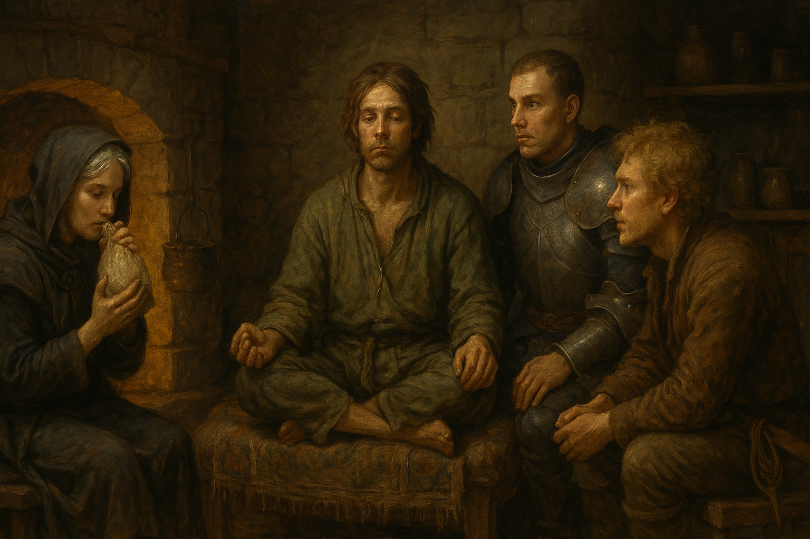

Chapter 5: The Rescue
The Gift from Alfenor

The Gift from Alfenor
15048.12.04
地底下一片空蕩蕩，漆黑無比。
Paladin 和伊兩人只能靠著 Tweeter 和華生的引導，或是偶爾靠著點有光亮術的東西才能知道自己周圍有什麼。
靠著 Marcus 給的魔法球，大家一路往前走。中間有座朝下的井口，伊拿出了自己的繩子，在井邊將繩子綁好，讓大家除了井中央十分緊繃的繩子外，還有額外的抓握處。大家依序抓著繩子爬下，華生和 Tweeter 因為能看得見，相對安全很多，伊在夸塞魔的協助下，順利降落到了下一層，Paladin 則在自己什麼都看不見的狀況下，兩度險些喪失了性命，但在夸塞魔和華生的幫助之下，他也迷迷糊糊地抵達了地面。
大家在井邊短休息了一下，發現距離監獄已經不遠了，便趕緊啟程。
遠方似乎有些許亮光，大家停在了一座金屬門前，將門推開，裡面全是熾熱的白光。大家一邊適應光線，一邊隨著魔法球的引導，在這儼然像是一座小城區的「監獄」內穿梭。繞過好幾個巷弄，來到了一個特定的區域。按照魔法球的指示，Marcus 的妹妹 Marianne 就是關在這裡了。帶頭的 Tweeter 在 Marianne 的牢房前，看見他虛弱地窩在牆角，眼睛閉上，感覺精神狀況非常不好。眾人討論了一下，原本這次只是要來做個探查，下次做好準備再進行救援，但已經這麼艱辛的來到了這裡，不如一口氣完成任務，將 Marianne 救出。
大家走回 Marianne 的牢房門口，Marianne 看見大家，以為他們是母親大人派來拯救他的，殊不知背後的主事者竟然是他的哥哥。華生試著用萬能鑰匙開鎖卻失敗了，Marianne 覺得莫名，自己在牢房內拿了個工具，便把牢房的們從內而外的打開，讓大家也覺得奇異。如果這麼好逃獄，為什麼不逃走。Marianne 表示剛剛大家應該已經經過中間的路，知道有多難逃。大家不是逃不走，而是知道就算逃出了牢房，也很難離開地底下。
冒險者們思索著要不要同時將其他犯人也放出，但是想在不驚擾任何人的前提下將 Marianne 救出，因此作罷。
走出日光燈照射的監牢區，Marianne 馬上狂吐，並跪坐在了地上，體力看起來十分糟糕。大家攙扶著他，慢慢往井口的方向前進。在討論之後，大家不想再從原本洗衣房的出入口出去，覺得太有可能驚動大家，而且華生不久前透過老鼠的眼睛，發現總管姊姊似乎不在現場，很有可能他已經去回報剛才的騷動了。
大家計畫著從井口直接爬到最上方去，那邊似乎是接到舊城區去。華生飛了上去，利用伊提供的滑輪組固定繩子，讓大家透過繩子可以攀爬上來。虛弱的 Marianne 則從手中射出了蜘蛛絲，將洞口牢牢覆蓋著，大家測試了一下，發現這蜘蛛絲堅固又有彈性，就算掉下來，應該也蠻安全的，於是大家便分批爬著繩子，來到了地面。
漆黑的舊城區，艱難的任務在通力合作下終於完成了。
半夜的舊城區，異常寧靜的讓人感到害怕，伊提醒大家要提高警覺。在華生的帶領下，大家試圖朝著 Marcus 宅邸的方向前進。花了一段時間，終於來到舊城區有人活動的地區了，於是伊便作回嚮導，帶著大家走回 Marcus 宅邸的小捷徑。
漆黑的巷弄中沒有任何照明，但因為對這裡相當熟悉，伊按照自己的記憶向前邁進。一瞬間，似乎有什麼絆倒了他，於是他停了下來，看見巷弄右側的木門前，一張邪笑的紅臉在手中光源的照射下看起來更加邪佞。伊趕緊用他們倆熟識的盜賊手勢溝通，得知這位魔人，他的徒弟，羅特，對於好一陣子沒有他的消息覺得奇怪，因此跑來攔截他。伊向他表示自己正在執行 M 伯爵的任務，就快完成了，完成後會再去找他。羅特接收完訊息後便轉身推開木門跑走了，留下滿臉無奈的伊停在半路上。
在隊伍後方的 Tweeter 也看得懂盜賊手語，因此向伊詢問發生了什麼事。在伊簡單說明是自己不識相的徒弟後，Tweeter 感受到自己的肩膀被輕拍了一下。他轉頭，看見一張邪笑的紅臉在他的眼前，距離不到五公分。那傢伙烙了一句「在下便是伊的徒弟，羅特。如果你們欺負我師父，就給我小心一點。」語畢，他便耍起腰間的匕首，但一不小心，匕首就掉到地上，落的羅特十分尷尬，蹲到地上趕緊撿起來。說完後，他便慢慢向後退，像是要消失在黑暗之中一樣。但在可清楚看見他的 Tweeter 眼中，可以看見羅特在退後一段距離後，便拔腿就跑，剛剛威嚇的神氣蕩然全失。
滿臉尷尬的伊頓在原地，不斷喃喃自語的唸著他那蠢徒弟。眼看帶頭的伊暫時喪失了行動能力，在隊伍中間攙扶著 Marianne 的華生便走到最前面。Marcus 的宅第在這裡已經可以用肉眼看見了。
在華生的帶領下，大家向 Marcus 宅邸走去，也看見有個成年人類形體的傢伙似乎試著要開 Marcus 家的門但是失敗了。Tweeter 一看就認出那是他們去喝酒的夥伴 Sugalu。華生從遠處喊著 Sugalu，眾人便會合了。在 Marianne 的協助下，大門很輕鬆的就扭開了，大家走入昏暗的一樓，但在黑暗中看不見的 Paladin 沒注意到門口陷阱的地洞，直直落了下去。在 Tweeter 的指引下，他才從地下一樓透過樓梯走回地面。
華生將 Marianne 扶到沙發上後，便問他是否有需要協助的地方，Marianne 請他向他哥哥要點宵夜，指定要「他愛吃的」。華生、伊，和 Tweeter 隱身的夸塞魔一同走到 Marcus 的辦公室，輕輕敲他的門。穿著華麗睡袍的 Marcus 睡眼惺忪，在了解狀況後拿了兩袋布袋給他們，表示一袋是 Marianne 要的「宵夜」，另一袋則是他們的報酬。但他對於自己妹妹被拯救帶回來這件事，似乎沒有表現出什麼雀躍的心情，只有想趕緊回到床上睡覺的疲憊模樣。Tweeter 的夸塞魔留在辦公室內，發現 Marcus 在門關上之後便倒頭就睡，打呼聲轟隆作響。
客廳，Paladin 很快就陷入熟睡，Sugalu 則在 Marianne 身邊仔細觀察他身上的配件，發現他似乎藏有一些匕首、小刀和繩索在身上。對於一個似乎被關在監獄中很久的人來說，身上有這些東西，讓他感到十分訝異。
回到一樓，華生輕輕拍醒 Marianne，將裝滿「宵夜」卻異常地輕的布袋遞給他。Marianne 拿起布袋放在嘴前便是一吸，布袋瞬間被吸成扁的。華生感到十分詫異，這宵夜到底是什麼東西？Marianne 很快就陷入沈睡，而且看起來氣色恢復得極好。
Sugalu 從熟睡的 Marianne 手中拿走布袋，從布袋的底端嘗試觀察看看到底有什麼酷東西，發現有一些殘餘的黃色粉末，他便吸了一下，瞬間感到精神百倍，感官大開，半夜的時間，什麼睡意都沒有了。伊好奇的拿了布袋，自己也小吸一口。Tweeter 感到好奇，拿來了布袋，沾了一點，放到熟睡的 Paladin 嘴前，沾到他的嘴裡。Tweeter 觀察了一下，認為這很顯然是毒品，但看起來沒什麼副作用，應該沒問題。華生則覺得不妥，但也沒有特別去制止。
伊搖搖晃晃，爬上樓上自己的房間準備就寢，但完全沒有睡意，心情亢奮到極點，看著窗外不斷扭動身體。樓下 Sugalu 則試著讓自己睡著，但完全無法，看著其他人都睡去了，自己則到天亮才漸漸睡去。
一早，Marianne 便睡醒了，盤腿坐在客廳沙發上，似乎正在盤腿打坐，口中念念有詞，絲毫沒有任何嗑藥的跡象；Paladin 則向巡視領地般，在客廳各處不斷逡巡，東張西望，但什麼也不說；華生移動到 Marianne 身邊，等待 Marcus 下樓；Tweeter 閉眼休息；Sugalu 則陷入了熟睡之中。
Marcus 下樓時，伊還徹夜未眠。他走到妹妹面前，兩人相視，卻不說話，但華生可看見他們兩人的表情不斷變化，似乎正在進行某種溝通。一段時間後，他們兩人像是放鬆下來了。此時樓上傳來伊不理智的話語聲，Marcus 嘆了一口氣。
華生主動向 Marcus 以及 Marianne 詢問了不少事，此時清醒的 Tweeter 和半睡半醒的 Sugalu 也一同參與，Paladin 則認真的巡查「自己的領地」。經過詢問，他們得知 Marcus 對於 Pamela 等反王派的舉動，想繼續觀察，因此想再待在麥克嵩一段時間，但比起國王的安危，很顯然 Marcus 還是比較在意自己與家人的安全。
另外大家在詢問下得知昨晚 Marcus 給 Marianne 服用的「宵夜」是一款被稱為「檸檬」的毒品，在市面上很常見，通常是拿來當作興奮劑的，和有時拿來在宗教儀式上作法用的毒品不同。
詢問 Marianne 後，他們也得知現任國王艾略特四世的母后 Marian 女士過去似乎是他蜘蛛神教的同夥，但在不知何時與拉索斯教合作的他的背叛下，身為蜘蛛神教在麥克嵩代言人的 Marianne 被揭發臥底的身份，關入地牢，原名 Marilyn 的 Marian 也改了名字，在麥克嵩繼續發展。另外 Anna 過去似乎也是 Marianne 的手下，但他沒想過 Anna 如今竟然可以發展得強大到能把一座城鎮以一己之力毀滅。對於 Marian 的崛起，Marianne 感到十分不滿，但是對於魁儡國王艾略特，他則似乎不太在乎。
同時，Marianne 也表示雖然阿爾芬諾被當作蜘蛛神，但蜘蛛神教忠實的信徒都知道母親大人才是真正的神，阿爾芬諾不過是他創造出來的孽物，卻收拾不掉罷了，而 Anna 現在似乎靠向了阿爾芬諾，而非和自己一樣忠誠於母親大人。
在經過對話後，Marcus 對於待在麥克嵩的決定動搖了，他認為將大家捲入宮廷鬥爭不是一件安全的事，試著說服大家先離開邁克嵩。但在離開前，他想帶 Twitter 去一個地方。出發前，Marcus 換了一身樸素的裝扮，同時也在 Twitter 的請求下，準備了一金幣量的檸檬，讓他拿來研究研究。
出發前，Sugalu 也將昨晚華生從 Marcus 那裡拿到的金幣分給大家：總共 400 枚金幣，華生、Tweeter 和伊一人分 100 枚，沒有參與簽約的 Paladin 和沒有參與任務的 Sugalu 則一人分 50 枚。
在 Tweeter 的要求下，其他人也跟著 Marcus 一起出發，留下 Marianne 照顧昏睡過去的伊。Marcus 帶著大家走到舊城區的一處廢棄房屋。漆黑的一樓裡面儘是才破的傢俱，Marcus 帶大家從樓梯往下走到地下室。地下室有一座壁爐，和一張桌子。桌子後坐著一個披著有星星符號斗篷的人，一動也不動。在 Marcus 的示範下，他拿出一枚金幣放在桌子上，那人便伸出手，將金幣拖走。Marcus 開口問了他「今天我妹妹說的那些話有說謊或隱瞞嗎？」，那人便回應了他，表示沒有說謊，但是有隱瞞。那人的聲音似乎是個年輕女子的聲音，大家聽了覺得異常的熟悉。
接著華生、Tweeter 也給了些金幣，和這人問了些問題。他們得知，拉索斯教在麥克嵩最大的聚集地在崔尼斯劇院的地下通道；以他們身形被 Hobb 製造出來的泥人從瑟巴諾出發，快要到麥克嵩了，只剩幾個月的路程；Tweeter 與交易之神意外達成的開眼交易無法取消，但會有命定之人拯救 Roline；最後，Roline 的軀體在命定之人拯救他之前，都會安全地被保護好。在離開前，Tweeter 張開了他額頭的眼睛，發現如他所猜測：斗篷底下的那人便是化為陶瓷的 Roline，但 Roline 背後似乎有個木偶，身體的零件都被拆開掉落在地上了。
離開這間小黑屋後，Marcus 在華生的請求下，回答了帶他們來這裡的原因。他表示這裡是交易之神在麥克嵩的重要據點，同時他也想讓大家可在這邊得到無法從他或 Marianne 那邊得到的解答。最後，他其實早就料到 Roline 最後會來到這裡，因此想讓大家可以來這邊看看，確保 Roline 過得好好的。
回程的路上，華生和其他夥伴討論著下一步該往哪裡去？他們提出了幾個方案：去崔尼斯劇院樓下的地下通道將拉索斯教一網打盡、回堵往麥克嵩來的泥人、帶 Marcus 到寇林菲爾德避難，或是去見 Sugalu 信仰的神王大人。
麥克嵩的局勢已經難以掌握，來自拉索斯教的威脅，與反王派壓倒性的勝利都難以對抗。團隊的下一步，充滿了不確定性。